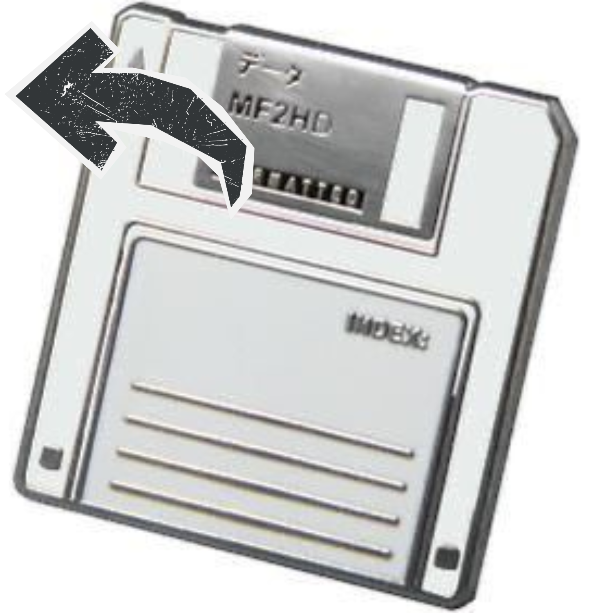
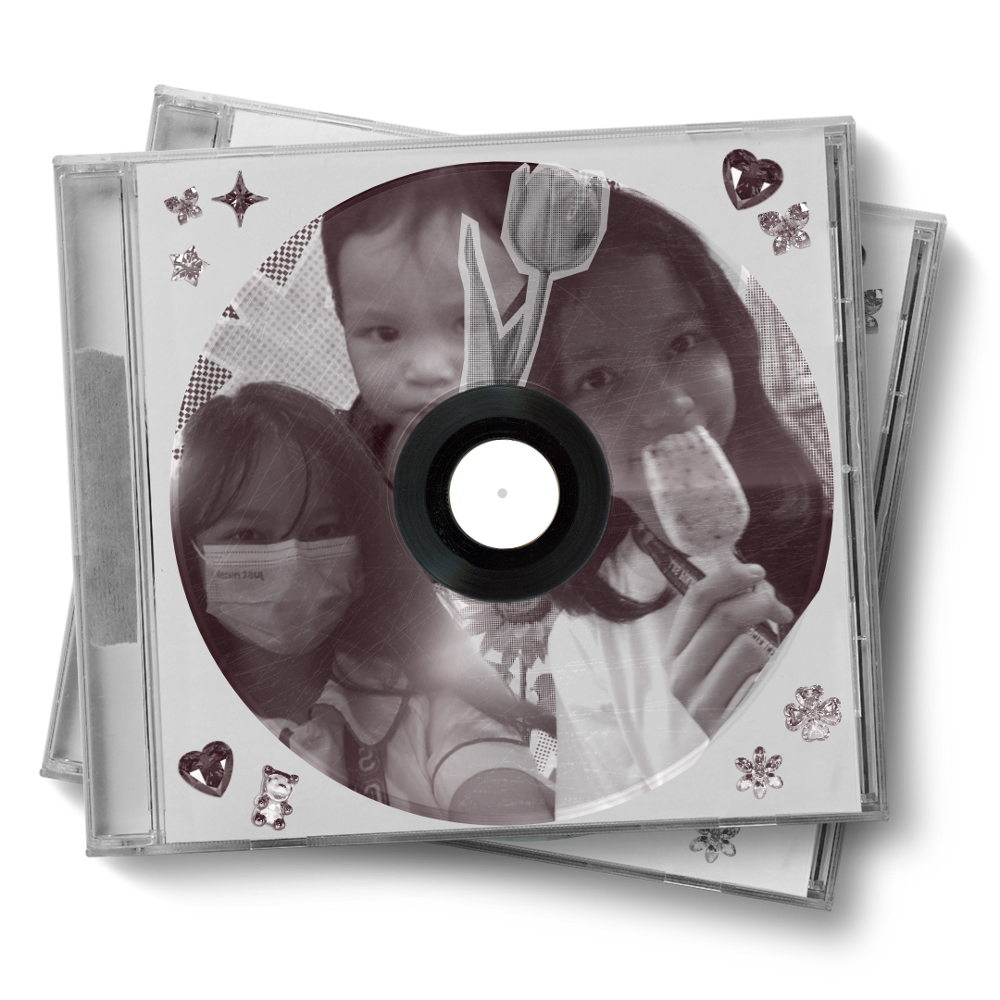

|  |
| |||
"Knowing yourself is the beginning of all wisdom" ‚Äî Aristotle Hi! I already introduced myself last time, sooo.. I'm Jeanine Faith S. Refran from 9 Fairness! I study as Las Pinas City National Science High School and I'm apart of the AP Club, Ilustrado Book Club & Values. I like to compete specifically for the Debate Society and I've been given chances in Research. My favourite color's pink, my favourite dessert's yogurt and cream puffs, my favourite ulam's sinigang and my favourite ICT lesson this quarter is probably Lesson 7. It was hard to memorize cause I didn't know how to prime and what to actually grasp on then I realized it was just like 4 main properties and its values. (‚î¨Ôπè‚î¨)  So the first video's from when I was in 3rd Grade. Me and a few of my friends got to stay after school in the Music Room as we were chosen to do a christmas performance! It was fun, my favourite teacher at the time was doing the choreography. At the part where we were waving we were told we'd have light sticks but that didn't happen at the time. I also did ballet around this year so I was asked to do a solo.. I was so proud of my dancing skills. Only now I look back at it would I proudly encourage myself but tell her to move a little closer to the center of the stage and to extend my legs at the funny looking jete more. <(＿　＿)> Ohh, I miss this one! This was our school's 40th anniversary at Solaire, 2015. I think they're making a new production for the 50th.. oh wow it's been 10 years. I was in Kinder! It was so so fun riding the bus from our school to Solaire for rehersals, wearing that angel costume and I remember the yummy lunch my mom packed for me, getting my lipstick stains on it, eating on the rehersal room floor and my teacher telling me to hurry up. It was so cold, the theater was so big. I loved it!!  Click the memory card to go back home! |
||||